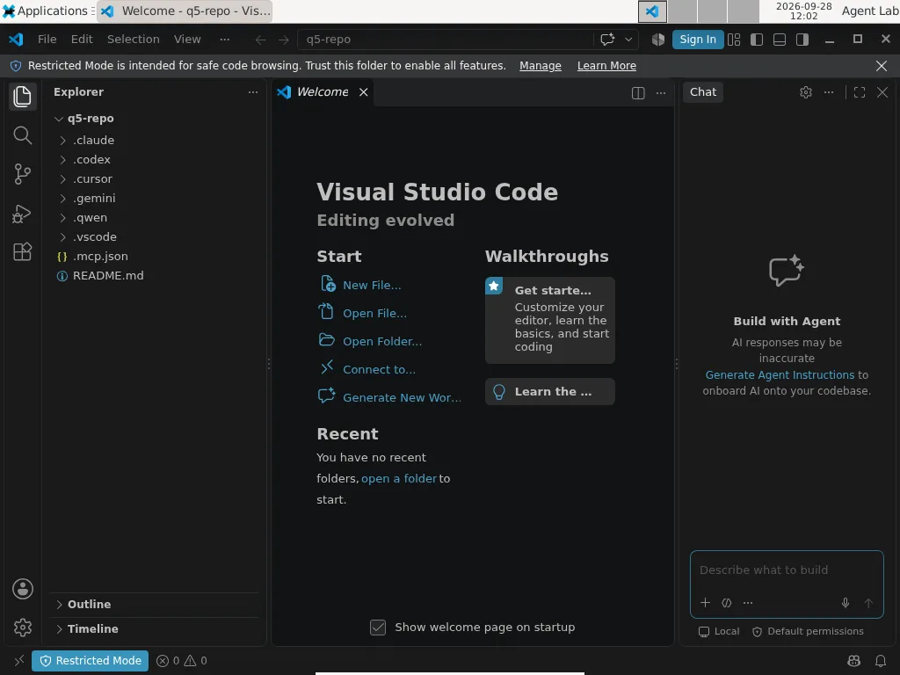
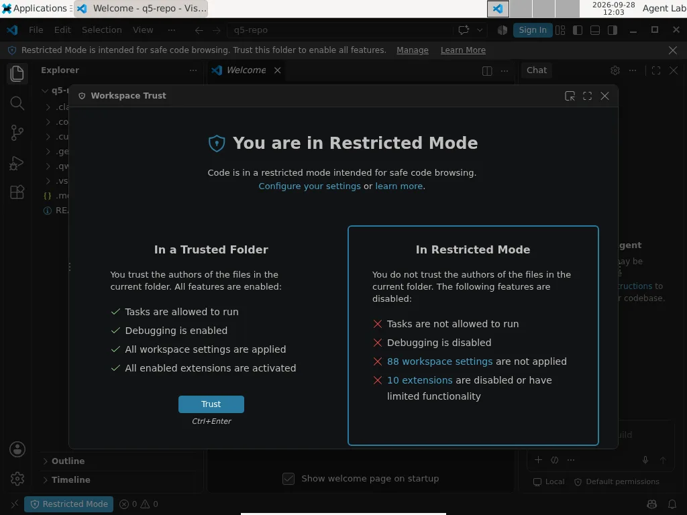
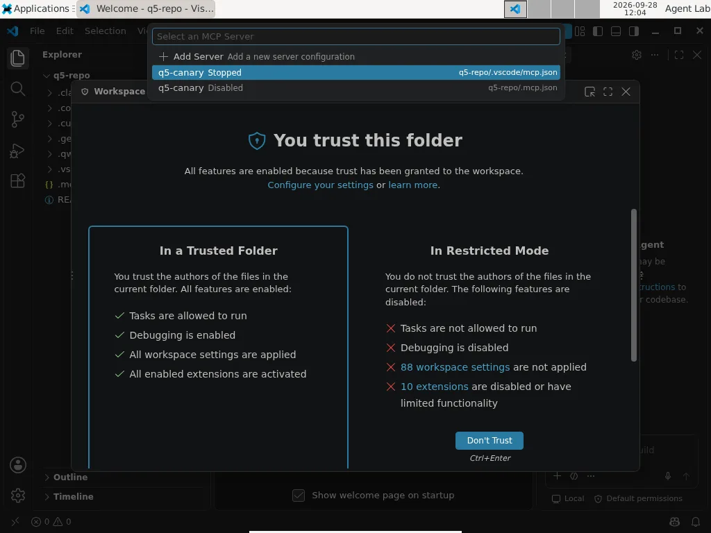

- No client started the canary before we answered: refusing, quitting or simply waiting never started it, in any client, in any repetition.
- In four of the five clients that read a project MCP configuration and ask about it, the pre-selected answer is the one that trusts. For three of them, trusting the folder is the same act as starting the servers it declares, with no second question.
- Claude Code is the most careful when you use it interactively, and starts the repository's server with no question at all in non-interactive mode (
claude -p), even before you log in. - What you are shown varies by an order of magnitude: Qwen shows the exact command, Gemini names the server, Cursor shows
node, VS Code's trust dialog does not mention MCP. - Section [06] has the read-only commands to check your own setup; section [09] has the lab: canary, runner, evidence and 14 tests.
- Part 2 of 5 of the Outside the Prompt series. Part 3, on 20 October: once you have approved a tool, can it change without you noticing?
[00] Result first
A repository can now declare its own MCP servers: a few lines in .mcp.json, .gemini/settings.json, .codex/config.toml or a similar file, and the agent you open it with learns that the project comes with tools. Those tools are programs. Declaring one is asking your machine to run it.
We built one repository that declares the same MCP server in every place each agent looks, and opened it in eight clients on a clean virtual machine. The server was a canary: it does nothing except write one line to a log when it starts. For each client we recorded whether it started the server, what it asked, the exact words on screen, and which answer sat under the cursor.
In an interactive session, no client started the canary before we answered. That is the good news, and it is not a given: this summer's disclosures, covered in part 1, show how often code runs before the trust decision.
The rest is less comforting. In five of the six clients that ask a question before using the project's tools (Claude Code, Gemini CLI, Codex CLI, Cursor CLI, Qwen Code, and VS Code, whose question appears when you open its chat), the pre-selected answer is the one that trusts. For three of them, trusting the folder is the same act as starting the servers it declares, with no second question: immediately, or, on Gemini 0.63.0, at the next opening. VS Code starts it later, with no question, the first time its chat wants a tool. One keypress, usually Enter, is the whole boundary. Cursor IDE asks nothing and keeps the project's servers disabled until you switch them on.
And one client behaves in the opposite way depending on how you run it: Claude Code is the most careful of the clients that ask a question when you use it interactively, and starts the repository's server with no question at all in non-interactive mode, even before you log in.
[01] Scope and method
Clients and versions. Current releases on 26–28 September 2026, installed from each vendor's official source and left on default security settings. On 9 October, before publishing, we updated the five terminal clients that had new releases and ran the whole matrix once more (column "re-checked"):
Swipe the table sideways to see all 4 columns →
| Client | Version | Installed from | Re-checked 9 Oct |
|---|---|---|---|
| Claude Code | 2.1.283 | official native installer | 2.1.295 |
| Codex CLI | 0.157.1 | npm @openai/codex |
0.162.0 |
| Gemini CLI | 0.61.0 | npm @google/gemini-cli |
0.63.0 |
| Qwen Code | 0.24.6 | npm @qwen-code/qwen-code |
0.25.0 |
| Cursor CLI | 2026.09.26 | official installer from cursor.com | 2026.10.01 |
| Goose | 1.52.0 | official release script | 1.52.0 |
| VS Code (+ built-in Copilot) | 1.139.1 | Microsoft .deb | 1.139.1, with Copilot signed in |
| Cursor IDE | 3.22.7 | official AppImage | first measured 9 Oct, signed in |
Environment. A Debian 13 virtual machine, 3 GB of RAM, restored from the same snapshot before every run. Automatic updates were switched off; two clients updated parts of themselves anyway (see [08]). The machine is disposable: no personal files, only the logins each client needs to run.
The repository. An ordinary-looking project, q5-repo, that declares one MCP server, q5-canary, in every project-level location we know of:
q5-repo/ ├── README.md ├── .mcp.json # Claude Code (VS Code also detects it) ├── .vscode/mcp.json # VS Code ├── .cursor/mcp.json # Cursor CLI and IDE ├── .gemini/settings.json # Gemini CLI ├── .qwen/settings.json # Qwen Code └── .codex/config.toml # Codex CLI
The declarations differ only in format. For example:
// .mcp.json (Claude Code) — .cursor/mcp.json, .gemini/settings.json and .qwen/settings.json use the same "mcpServers" shape
{
"mcpServers": {
"q5-canary": {
"command": "node",
"args": ["/home/lab/q5/marker-server.mjs"],
"env": { "CANARY_CLIENT": "claude-code", "CANARY_LOG": "/home/lab/canary-start.log" }
}
}
}VS Code uses servers with an explicit type; Codex uses a TOML table [mcp_servers.q5-canary]; both are in the lab package.
The server path is absolute on purpose: we wanted to measure whether each client starts a declared server, without differences in how clients resolve relative paths getting in the way.
The canary. A short Node.js program. When it starts it appends one JSON line to a log (time, which client, parent process); it answers the MCP handshake with a single tool that does nothing and returns "ok". It never opens a network connection and never touches another file. The full source is in the lab package ([09]). A start looks like {"event":"start","client":"gemini",...} in the log.
What we recorded. For each client, three moments: the first opening, with no trust given; the moment right after the trust decision; and reopening a project that is already trusted. For each moment: the exact text on screen, the pre-selected option, and whether the canary's log recorded a start. On the first prompt of every client we waited at least 25 seconds before answering, to catch anything that starts in the background while the question is on screen. The log was emptied, the repository rebuilt and the client's stored trust for it removed before every cell.
Repetitions. We first ran every cell by hand on 28 September, reading each screen. Then we wrote a runner that drives the six terminal clients through the same cells in a terminal multiplexer, answers with fixed keys, and saves the screen at every question. On 9 October it ran the whole matrix twice from the same snapshot; the six Codex cells of the first run were discarded because its background component had updated itself mid-run (see [08]), and Codex plus Gemini's trust cell were rerun three times after reverting the snapshot: 46 valid automated cells on the September versions. The same evening we updated the terminal clients to the releases of 9 October and ran the matrix once more, plus three extra repetitions on Gemini: every prompt, every pre-selected answer and every "before answering" cell came back identical. That adds 29 cells, for 75 valid automated cells in all. The one difference is noted under Gemini.
Controls. Each client was also driven to approve the server explicitly, to prove the canary really starts when it is supposed to. It did, in every client able to start it. Claude Code's non-interactive run was repeated three times.
Not tested here. Whether a model can be talked into calling a server's tools. This post is only about whether the program starts, and under which decision.
[02] Results at a glance
Swipe the table sideways to see all 6 columns →
| Client | First question | Pre-selected answer | Canary started before answering | After trusting the folder | Reopening |
|---|---|---|---|---|---|
| Claude Code | Trust this folder? | No, exit | 0 of 2 | A second question, for the server only; pre-selected: continue without it → started 0 of 2; explicit approval → 2 of 2 | Stays off (0 of 2); no new question |
| Gemini CLI | Trust this folder? Lists the server by name | Trust folder | 0 of 2 | Starts the server, no further question: 4 of 5 within 15 s on 0.61.0; on 0.63.0, 1 of 4 in the same session | Starts it (2 of 2; 0.63.0: 4 of 4) |
| Codex CLI | Trust this folder? Warns that folder settings can run code | Trust and continue | 0 of 3 | Starts the server, no further question: 3 of 3 | Starts it (3 of 3) |
| Cursor CLI | Trust this workspace? Says MCP servers will be enabled | Trust this workspace | 0 of 2 | Starts the server: 2 of 2. With option [w]: approval screen, pre-selected "Approve all servers"; declining → 0 of 2 | Starts it (2 of 2) |
| Qwen Code | No folder question; a per-server question with the full command | Approve this server | 0 of 2 | Starts it after approval: 2 of 2 | Starts it (2 of 2); after a configuration change asks again, 0 of 2 started before re-approval |
| VS Code | No dialog on opening; Restricted Mode banner. Opening the chat asks: Do you trust the authors? | Trust Folder & Continue | 0 of 1 without Copilot, 0 of 1 with | Does not start it on trust (0 of 1 without Copilot, 0 of 1 with); starts it with no question the first time the chat wants its tool, then asks only whether to run the tool, pre-selected "Allow in this Session" (1 of 1) | Does not start it (without Copilot; not re-measured with chat) |
| Cursor IDE | No dialog; no restricted mode | none | 0 of 1 | Project server listed as Disabled; the agent cannot load it (0 of 1). Switching it on in settings starts it at once, without showing the command (1 of 1) | — |
| Goose | none | — | — | Does not read servers from the repo: 0 of 2 | — |
Refusing, quitting or simply waiting never started the canary, in any client, in any repetition. The one result that did not repeat perfectly is Gemini's: in one of five repetitions the canary was not seen within 15 seconds of trusting the folder; that pass had no later check.
[03] Client by client
Claude Code 2.1.283
Opening the folder produces this, with the cursor on the first option:
Accessing workspace: /home/lab/q5-repo Quick safety check: Is this a project you created or one you trust? (Like your own code, a well-known open source project, or work from your team). If not, take a moment to review what's in this folder first. Claude Code'll be able to read, edit, and execute files here. Security guide ❯ No, exit Yes, I trust this folder
The question does not mention MCP servers. Pressing Enter exits. Choosing "Yes, I trust this folder" does not start the server either; a second question appears, again with the safe option pre-selected:
New MCP server found in this project: q5-canary
MCP servers may execute code or access system resources. All tool calls require approval.
Use this MCP server
Use this and all future MCP servers in this project
❯ Continue without using this MCP serverWith the default answer the canary never started, and on reopening Claude Code did not ask again: the choice is remembered. Choosing "Use this MCP server" started it immediately. The middle option, "Use this and all future MCP servers in this project", is worth noticing: it pre-approves servers that do not exist yet.
Verdict: the only client that separates the two decisions and defaults to "no" on both. See [04] for the exception.
Gemini CLI 0.61.0
Do you trust the files in this folder?
Trusting a folder allows Gemini CLI to load its local configurations, including custom commands, hooks,
MCP servers, agent skills, and settings. These configurations could execute code on your behalf or change
the behavior of the CLI.
This folder contains:
• MCP Servers (1):
- q5-canary
● 1. Trust folder (q5-repo)
2. Trust parent folder (lab)
3. Don't trustThis is the most informative first question of the lot: it names the server the folder declares. It also pre-selects "Trust folder", and offers to trust the parent folder, which would extend the decision to every project in it. Choosing "Don't trust" left the canary off, and Gemini ran with project settings ignored, showing "untrusted" in its status bar. Choosing "Trust folder" started the canary at once, with no further question, and it started again at every reopening. On 0.63.0, released 6 October, the same choice started the canary in the same session only once in four runs; in the other three the screen said "Skipping project agents due to untrusted folder" and the status line stayed untrusted, but the decision was saved and the server started at every reopening (4 of 4). 0.63.0's release notes include a fix to "propagate resolved folder trust state in headless mode" (PR #29528). It changes when the server starts, not whether: one click, then the next opening.
Verdict: transparent about what trust means, but trust and execution are one click, and the click is pre-selected.
Codex CLI 0.157.1
Folder access /home/lab/q5-repo Trust this folder? Codex can read, edit, and run files here, subject to your permission settings. Folder settings can run code automatically, even without a model request. Continue only if you trust these files. Your trust decision will be saved. › 1. Trust and continue 2. Back to Agent Command Center
Codex's warning is the most honest sentence we saw in this test: folder settings can run code automatically, even without a model request. That is exactly what happened. "Trust and continue", pre-selected, started the canary with no MCP-specific question, and it started again on every reopening. Pressing Esc saved nothing and the question came back next time. The decision is written to ~/.codex/config.toml:
[projects."/home/lab/q5-repo"] trust_level = "trusted"
One correction to our own earlier notes: before testing we believed Codex only read MCP servers from its global configuration. It reads .codex/config.toml inside a trusted project too.
Verdict: a clear warning, then one pre-selected click for both decisions.
Cursor CLI 2026.09.26
⚠ Workspace Trust Required
Cursor Agent can execute code and access files in this directory.
This will also enable the MCP servers configured for this workspace.
Do you trust the contents of this directory?
/home/lab/q5-repo
▶ [a] Trust this workspace
[w] Trust this workspace, but don't enable all MCP servers
[q] QuitCursor states plainly that trusting enables the workspace's MCP servers, and it is the only CLI besides Claude Code that offers to separate the two, with option [w]. But [a] is pre-selected, and [a] started the canary immediately; on reopening it started again with no question. (Cursor launches the server twice per session; we count sessions, not processes.)
Choosing [w] did not start it. The next session showed this, and again the pre-selected answer is the permissive one:
⚠ MCP Server Approval Required
Some MCP servers can execute code and read your data.
The following MCP servers need to be approved:
• q5-canary (command: node)
▶ [a] Approve all servers
[c] Continue without approval
[q] QuitNote what the approval shows: command: node. Not the script node will run, not its arguments. Every Node-based server looks the same here. Trust is stored as a file, ~/.cursor/projects/<project>/.workspace-trusted.
Verdict: offers the right separation, but the default skips it, and the approval screen hides what will run.
Qwen Code 0.24.6
Qwen asks no question about the folder. It asks about the server, and shows more than anyone else:
Untrusted MCP server in .qwen/settings.json This workspace declares an MCP server. Approving lets Qwen Code start it and run its tools. Approval is bound to this exact configuration — if .qwen/settings.json changes, you will be asked again. q5-canary node /home/lab/q5/marker-server.mjs (stdio) [env: CANARY_CLIENT, CANARY_LOG] › 1. Approve this server 2. Approve all pending servers in this workspace 3. Reject (esc)
The full command, the transport and the names of the environment variables it will receive. The pre-selected answer is "Approve this server". Rejecting kept the canary off and was remembered. Approving started it, and it started on every reopening. Then we changed one value in .qwen/settings.json: Qwen showed the same question again and did not start the server until we approved it again. We repeated the change a second time with the same result. Approvals are stored with a hash of the configuration in ~/.qwen/mcpApprovals.json:
{"/home/lab/q5-repo": {"q5-canary": {"hash": "a8e2e96c…", "status": "approved"}}}One more default is worth knowing: Qwen starts in Auto mode, where a model-based classifier approves actions it judges safe.
Verdict: the best information and the only protection against a declaration that changes after approval; the pre-selected answer is still "approve".
VS Code 1.139.1
VS Code opened the folder without any dialog, in Restricted Mode, with a banner at the top:

The trust dialog, reached from the banner, lists what trust enables (tasks, debugging, workspace settings, extensions) but does not mention MCP servers:

After we clicked Trust, VS Code still did not start the server. The command palette's MCP: List Servers showed that it had found both declarations: .vscode/mcp.json as Stopped and the root .mcp.json as Disabled. The second one is new: VS Code now picks up the file Claude Code uses. The change is PR #335515, merged on 10 September 2026 for release 1.138: workspace-root .mcp.json servers now inherit workspace trust, like .vscode/mcp.json, instead of the earlier per-server consent.

Starting it by hand (Start Server) worked with no MCP-specific confirmation; the first time, VS Code only asked how to store encrypted data because our machine had no OS keyring. On reopening it did not start the server again.
Verdict: the most conservative default we saw, as long as nobody opens the chat.
With Copilot signed in (measured on 9 October, one run, screenshots in the lab package): opening the folder still produced no dialog. Opening the chat did: "Do you trust the authors of the files in this folder? AI features are currently only supported in trusted workspaces", with Trust Folder & Continue as the highlighted default; we held it for 25 seconds and the canary stayed off. After trusting, the canary stayed off for another 27 seconds. Then we asked the chat, in Agent mode, to use the q5-canary tool. VS Code started the server immediately, with no question: the log shows the start and the MCP handshake from .vscode/mcp.json within ten seconds. The question came after the program was already running, and it was about the tool call, not the server: "Run canary_noop — q5-canary (MCP Server)", with Allow in this Session pre-selected and Skip beside it. Choosing Skip left the server running and the tool uncalled. This is documented behaviour: Microsoft's MCP configuration reference states that workspace MCP servers inherit Workspace Trust, and describes an experimental setting, chat.mcp.autostart, that controls which servers VS Code starts automatically when you submit a chat message.
Cursor IDE 3.22.7
Measured on 9 October, one run, signed in. Opening the folder produced no trust dialog and no restricted mode: the Agent panel was ready at once, and the canary stayed off for 30 seconds. Asked to use the q5-canary tool, the agent read the repository's files without asking, searched its tool catalogue, tried to load the server and was refused: "MCP server 'q5-canary' not found". The project's server exists only in the settings (Customize → MCPs), listed as q5-canary · q5-repo · Disabled; its configuration dialog shows the source file, .cursor/mcp.json, and a switch, but not the command. Switching it on started the canary within five seconds, with "Local · Connected" and the tool enabled.
Verdict: the only client that keeps a project's servers off until the user turns them on, even when its agent asks for them, with no question to press Enter on; but the screen that turns them on tells you less than Qwen or Cursor's own CLI about what will run.
Goose 1.52.0
Goose asked nothing and started nothing. It reads MCP servers ("extensions") only from its own configuration, ~/.config/goose/config.yaml, not from the project. The repository, with six other clients' declarations in it, had no effect on it. Goose recipes can declare extensions, but a recipe has to be run explicitly.
Verdict: a repository cannot declare servers for Goose.
[04] The exception, and what happens before the question
No question at all
Everything in [03] is about interactive sessions. Coding agents are also run from scripts, CI jobs and other tools, in non-interactive mode. We opened the same repository in each client's non-interactive mode, before logging in:
cd q5-repo claude -p "say ok" # Claude Code gemini -p "say ok" # Gemini CLI qwen -p "say ok" # Qwen Code codex exec "say ok" # Codex CLI
Claude Code started the canary with no trust question and without a valid login, in three runs out of three. It launched the server, completed the MCP handshake, then exited with "Not logged in".
This is documented behaviour, and the documentation has become more explicit since we first measured it. Anthropic's page on running Claude Code programmatically now says: *"Without --bare, a -p session runs the hooks in a project's .claude/settings.json and connects the servers in its .mcp.json, even in a folder you've never trusted. A -p session shows no workspace trust dialog and no per-server approval prompt."* The permissions page says the same in a table, and lists the ways out: --bare (which stops reading project hooks, skills, plugins and .mcp.json; the limits were only partial before 2.1.286, as the same page states), --setting-sources user, --settings '{"disableAllHooks": true}', and a disabledMcpjsonServers entry. The docs add that --bare "will become the default for -p in a future release". We checked the two documented escapes on 2.1.295: with --bare or --setting-sources user the canary did not start, three runs out of three each. That check ran in a folder the previous matrix cell had already trusted, so it shows the flags keep project servers out even of a trusted folder. Plain claude -p on 2.1.295, with the folder's trust entry removed before each run, started the canary 3 of 3, as 2.1.283 had in September.
The others stopped before loading anything: Gemini and Qwen at authentication ("set an Auth method", "No auth type is selected"), Codex at a directory check ("Not inside a trusted directory"). Once logged in, Gemini also refused to run non-interactively in an untrusted folder:
Gemini CLI is not running in a trusted directory. To proceed, either use `--skip-trust`, set the `GEMINI_CLI_TRUST_WORKSPACE=true` environment variable, or trust this directory in interactive mode.
So the client with the safest interactive defaults is the one with no boundary at all in automation. Anyone running Claude Code with -p over code they did not write — a pull request in CI, a dependency, a submitted exercise — should assume the repository's MCP servers and hooks will run, unless the command says --bare.
Before the question
Everything in this post happens at or after the trust question. Part 1 of this series showed the other half: GitSpawn, a flaw found in seven agents, in which a repository received as files — with its own .git directory — makes the agent run a program from the repository's git configuration while it gathers context, outside the sandbox and, on some agents, before the trust question appears. This is what the public record says about the versions we tested, as of 9 October (source: public disclosures, not our measurement):
Swipe the table sideways to see all 4 columns →
| Client (version tested) | At disclosure, 1 September | Since then, from primary sources | Our version |
|---|---|---|---|
| Claude Code 2.1.283 | startup path fixed in 2.1.196; a second path through ultrareview still open on 2.1.252 |
Anthropic's changelog does not mention GitSpawn; several /ultrareview git-configuration fixes appear from 2.1.285, none labelled as a security fix |
startup path covered; second path not confirmed |
| Codex CLI 0.157.1 | fixed (no version given) | — | fixed before disclosure; version not given, so inferred |
| Cursor CLI 2026.09.26 | fixed (no version given) | — | fixed before disclosure; version not given, so inferred |
| Goose 1.52.0 | fixed in 1.44.0 (CVE-2026-72718) | — | covered |
| Qwen Code 0.24.6 | not fixed on 0.22.3; accepted by Alibaba's security team | a partial change in 0.21.9 did not close it; issue #10561 (labels: security, P1, vulnerability), opened 30 August, still open on 9 October with two commits referencing it on 7 September and no fix version; it says that "per-site enumeration cannot converge" | not confirmed; treat as open |
| Gemini CLI 0.61.0 | not tested by Manifold | — | unknown |
Our September Claude Code version, 2.1.283, predates the /ultrareview fixes; the re-checked 2.1.295 includes them, but no source says whether they close the second path.
Practical consequence: a repository that arrives as an archive, a shared folder or a USB stick — not as a fresh git clone, which does not carry .git/config — should be opened only after checking its git configuration, whatever the agent.
[05] Four readings
The default is the decision. A trust prompt is a control only if people read it, and the pre-selected answer is what you get when you do not stop to read. In Gemini, Codex and Cursor CLI, Enter means "trust this folder"; in Qwen it means "approve this server"; in Cursor's second screen it means "approve all servers"; in VS Code it means "trust folder and continue" and, later, "allow in this session". Only Claude Code puts "No" under the cursor. None of this is a bug. It is a product decision about friction, and it decides the outcome for everyone who does not stop to read.
One click covers two decisions. Trusting a folder's files and running the programs it declares are different acts. Claude Code asks twice. Cursor CLI lets you split them but does not by default. Gemini and Codex do not split them at all. Codex at least says so in one clear sentence.
What you are shown varies from the full command to nothing. Cursor IDE's switch shows only the file name. Qwen shows the exact command and its environment variables. Gemini names the server. Cursor shows node. Claude Code names the server on its second screen. VS Code's trust dialog does not mention MCP. The same decision, with very different information.
Only one client notices change. Qwen ties approval to the configuration's hash and asks again when it changes. Everywhere else, once a project is trusted, whatever it declares later is covered by the same yes. That is next week's test.
[06] Check your own setup
Everything here is read-only unless it says "revoke".
The lab package ([09]) includes two read-only tools that do this for you:
node scripts/check-repo.mjs path/to/repo # every MCP server the repository declares, and the exact command it would run node scripts/check-trust.mjs # every project you have already trusted, client by client
check-repo exits with code 1 when the repository declares anything, so it can stop a script or a CI step. If you prefer plain shell:
Before opening a repository you did not write, list what it declares:
cd path/to/repo ls -la .mcp.json .vscode/mcp.json .cursor/mcp.json .gemini/settings.json .qwen/settings.json .codex/config.toml 2>/dev/null grep -l -E '"mcpServers"|"servers"|\[mcp_servers' .mcp.json .vscode/mcp.json .cursor/mcp.json .gemini/settings.json .qwen/settings.json .codex/config.toml 2>/dev/null
Read the command and args of each entry: that is what will run on your machine. And for a repository that arrived as files rather than as a fresh clone, check its git configuration too:
git -C path/to/repo config --local --list # any key whose value is a program path deserves a second look
See which projects you have already trusted, client by client:
# Claude Code: projects with accepted trust and approved project servers python3 -c "import json,os; d=json.load(open(os.path.expanduser('~/.claude.json'))); [print(p, v.get('hasTrustDialogAccepted'), v.get('enabledMcpjsonServers')) for p,v in d.get('projects',{}).items()]" # Gemini CLI cat ~/.gemini/trustedFolders.json # Codex CLI grep -A1 '^\[projects\.' ~/.codex/config.toml # Cursor CLI ls ~/.cursor/projects/*/.workspace-trusted 2>/dev/null # Qwen Code cat ~/.qwen/mcpApprovals.json
Revoke:
- Claude Code:
claude mcp reset-project-choices(run inside the project) clears the approvals for its servers; you will be asked again next time. - Gemini CLI: inside a session,
/permissionschanges the folder's trust level; or edit~/.gemini/trustedFolders.json. - Codex CLI: remove the
[projects."…"]block for the folder from~/.codex/config.toml. - Cursor CLI: delete the project's entry in
~/.cursor/projects/; the trust question came back when we did. - Qwen Code: remove the project from
~/.qwen/mcpApprovals.json;qwen mcp listshows the configured servers. - VS Code: Command Palette → Workspaces: Manage Workspace Trust.
In automation: do not run claude -p (or any agent in non-interactive mode) on untrusted code outside an isolated environment — a container or VM with no credentials and no network beyond what the job needs.
[07] What we would ask vendors
- Make "don't trust" the pre-selected answer on the first screen.
- Separate trusting a folder's files from starting the programs it declares.
- Show the full command and arguments, not just the executable.
- Ask again when a server's declaration changes (Qwen does this today).
- Apply the same rule in non-interactive mode, or refuse to load project servers there unless a flag says so explicitly. Anthropic has announced the second option (
--bareas the future default for-p); the date matters.
[08] Limits and things we noticed along the way
- Each cell ran two or three times from the same snapshot (46 + 29 = 75 valid automated cells, plus the manual pass of 28 September).
- The 25-second wait applies to the first prompt of each client. The runner holds that prompt for 25 seconds in the first cell and answers it immediately in later cells, since that window had already been measured; it holds the second-screen prompts (Claude Code's server question, Cursor's approval screen) for 10 seconds. The 25-second wait on those second screens is the manual pass of 28 September. Two or three repetitions show that a behaviour is stable, not how often a rare one occurs.
- VS Code with Copilot and Cursor IDE were measured once each, by hand on 9 October, after the matrix; the earlier VS Code pass without Copilot is the one in the automated evidence. During Cursor's login the 3 GB test machine ran out of memory (a browser and the editor together) and had to be reset; the measurement was repeated with the editor alone.
- Versions of late September 2026, re-checked on the releases of 9 October for the terminal clients. Defaults change with updates; the Gemini change above happened inside our two-week window.
- The "before the question" table relies on public sources; we did not re-run GitSpawn.
- VS Code was tested only on 1.139.1, after PR #335515; we did not compare a pre-1.138 build.
- The canary path is absolute. We did not test relative paths or
npx; in every client the question is asked before the command is run, so we expect only the displayed command to differ, not the decision. - This measures product behaviour, not model behaviour, and says nothing about what a malicious server could do once running.
Setting up eight clients on a clean machine also produced facts that change what "default" means:
- Gemini CLI no longer accepts personal Google accounts for its free individual tier. The login returned "This client is no longer supported for Gemini Code Assist for individuals" and pointed to Antigravity. We used an API key.
- Qwen Code's free OAuth login is gone; the client offers only API-key providers.
- Logging in to Claude Code synced the account's plugins and settings into the fresh machine. They did not change the two prompts we measured, which match the vendor's documentation; a repeat with a clean account is planned for the preprint. Either way, a clean install stops being clean at login.
- Two clients updated themselves during the tests, with automatic updates switched off. Cursor CLI moved from 2026.09.26 to 2026.10.01 in the middle of a run; its answers did not change. Codex's background component downloaded 0.158.0 on 28 September and 0.162.0 on 9 October; after the second update the 0.157.1 command-line tool refused to start with it: "Cannot use the background server — Experimental feature request failed", with Cancel pre-selected. Choosing "Run without daemon this time" let it continue. We discarded those cells and repeated them. "The version you tested" is a moving target even on a machine where you froze it.
[09] The lab
Everything needed to check these results is in the lab/ folder next to this article, in the same format as the lab of our MCP state-handle post:
| Path | What it is |
|---|---|
lab/README.md |
safety boundary, requirements, how to reproduce, results table |
lab/canary/marker-server.mjs |
the canary: logs that it started, answers the MCP handshake, one no-op tool, no network, no other files |
lab/scripts/make-test-repo.mjs |
builds the test repository with the six project-level declarations |
lab/scripts/check-repo.mjs, check-trust.mjs |
the two read-only tools from [06] |
lab/scripts/run_q5_matrix.py |
the unattended runner for the six terminal clients — disposable VM only: it edits the clients' trust stores |
lab/scripts/summarize_matrix.py |
turns the runs into the results table and flags disagreements |
lab/test/ |
14 node:test tests for the components above |
lab/evidence/ |
test output, an environment manifest with SHA-256 hashes, both matrix runs on the September versions, the re-check of 9 October (recheck-20261009/), CSV, versions before and after each cell, the screen captures at every prompt, and notes on what was discarded and why |
cd lab npm test # 14 tests, no dependencies npm run evidence # rewrites evidence/, fails unless 14/14 pass node scripts/check-repo.mjs ~/some/repository
The publication gate is the same as for the MCP lab: the package is published only when all 14 tests pass, and evidence/environment.json records the hash of every source and evidence file.
Code, canary, runner and sanitized output are in the reproducible lab. Machine-readable evidence is available as TAP and an environment manifest.
[10] Next
Part 3, on 20 October: once you have approved a tool, can it change without you noticing? We will change a harmless tool's description after approval and see which clients say something. New in part 3: the clients will also run against open-weight models hosted on our own GPU (Qwen3.8-27B, Gemma 4 26B, Nemotron 3.5 30B, exact tags and digests in the lab), so that we can see the tool list each client hands to the model at every turn, something the vendors' hosted APIs never show.
Sources
- Reproducible lab — README, safety boundary and results table
- Lab evidence — TAP output of the 14 tests
- Lab evidence — environment manifest with SHA-256 hashes
- Lab evidence — matrix runs of 9 October (summary, CSV and screen captures in
lab/evidence/q5-run/) - Part 1 of this series — Outside the prompt: what this summer's AI agent vulnerabilities have in common
- Manifold Security, “GitSpawn”, 1 Sep 2026 — manifold.security